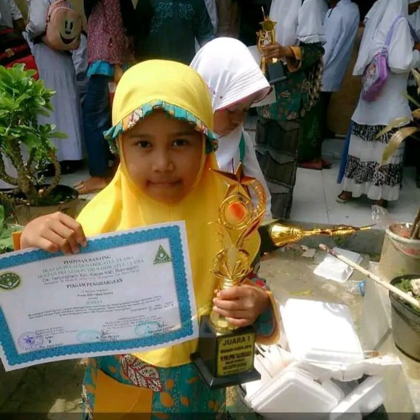

"Bayangin, umur 4 tahun, masih kecil banget, pertama kali naik panggung buat lomba Pildacil tingkat kabupaten, eh malah nyabet juara 2! 🤯 Dari grogi parah sampai berani tampil. Momen ini jadi bukti kalau nggak ada yang
nggak mungkin kalau kita berani! 💪. Little me was unstoppable! 🚀"

"Dari nol ke final! Pengalaman pertama sebagai finalis lomba news anchor bikin aku sadar, ‘Oh, aku bisa!’ 🔥 Campur aduk antara deg-degan dan excitement, tapi semua worth it! Langkah ini bikin aku makin semangat explore
dunia public speaking dan broadcasting. Who knows, next time I'll own the podium!"
"Dari lomba pidato hingga baca berita, aku akhirnya nemuin passion baru di dunia MC. Saat SMP, aku sering banget jadi MC dari acara formal, non-formal, sampe di event bergengsi yang diselenggarain pemerintah! Bahkan, di
hari kelulusan, aku dipercaya buat ngasih sambutan mewakili angkatan. Semua ini bikin aku makin jatuh cinta sama public speaking! 🎤✨"